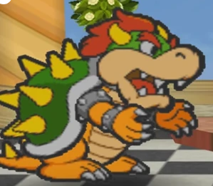
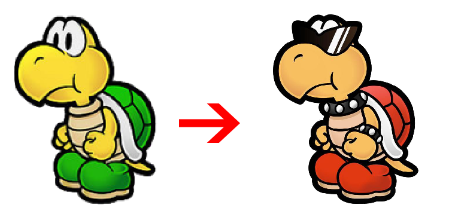
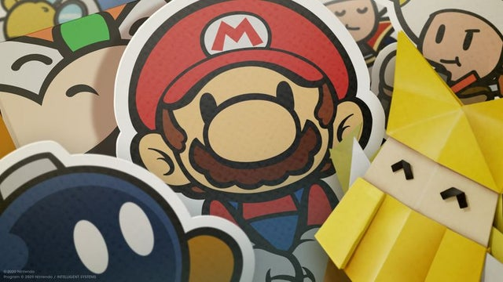

It begins...
Here we will analyze the sprite and design evolution of the Paper Mario franchise. In addition to what changes, you may find just as interesting what does not. Why does change occur?
"..From the production of Paper Mario: Sticker Star onwards, we were no longer able to graphically represent individual characteristics, such as age, gender etc., in the Toad NPCs (non-playable characters), and so it has become that much more important to convey their personalities simply through text” -Kensuke Tanabe
In more recent times Nintendo appears to prefer overall 'consistent' character design in Mario. Some fans may call this 'New Super Mario Bros' style, but the 2005 Nintendo DS game is innocent I swear! It's more of a misdirection if anything, this perceived 'blandness' a symptom of homogenization and efficiency depending on specific game and context. This is why more characters have the über-flexible 'Toad' or 'Koopa' treatment, without backstory or too distinguishing of a name to make it easy and clean. (That's not to say there aren't canonical traits or quirks of the typical Mario cast that come up in various games, alas that would be another article!)
Note some writing changes. The original Paper Mario is マリオストーリー ('Mario Story') in Japan. Is the paper verisimilar or is the focus more on a RPG world setting? The Japanese marketing materials DO mention paper elsewhere and the style appears conclusive, including the visual effects of walking into buildings, but it's not as cut and dried as it might appear when remarks in-universe say otherwise or muddle it.
Draw your own conclusions..
Mario being twisted into paper shapes is presented as 'curses' in The Thousand Year Door for instance. Characters generally don't speak as if they are paper until Sticker Star, where that shifts completely in dialogue, is a major source of comedy, and non-paper entities are so mysterious and powerful they become the game's signature 'Things'. Static objects that did not appear to be made of paper in previous games are remodeled in later games to have paper effects, very obvious with water. Unmissable as well, later games use battling and gameplay mechanics that are heavily related to the theme of paper. Why?
The Paper Mario franchise post Super Paper Mario does not see itself as an RPG, rather a puzzle/adventure game with turn based battles. The RPG-like mechanics that show anyway have idiosyncrasies: lack of experience system, damage calculation is nebulous, consumables are the key to victory and if the player doesn't have them they can atypically flee the boss fight to get it, lack of proper bestiary, a lack of or diminished hub worlds.. Let's break it down already. Some of the differences will be so slight, only a direct comparison reveals them!:
Mario:
In 64 he has a simplified style to fit in with 'story book', with some discrepancies of course between artwork and in-game sprites. In TTYD he’s redesigned to look like how we think of Paper Mario today. SPM keeps that but it is a slightly sharper image. Sticker star changes his gloves and adds a felt like texture to him, but only in concept art. Color Splash adds the white outline. Mario's proportions are tweaked regarding hat and nose. It is worth nothing that he has new animations depending on the game, such as dancing in the newer games. There are some subtle tweaks. The outlines become only black in the modern games and things such as sharpness is tweaked.

| 
|
|---|
From left to right: General comparisons; The excellent concept art of Sticker Star; Paper Mario Color Splash in game and on the far right concept art making Mario a sticker.

| 
| 
|
|---|
From left to right: Front facing Mario models in which he manages to strike a different pose every time. It's rather impressive how they kept tweaking that; Mario being defeated poses; Mario afraid: TTYD vs CS.

| 
|
|---|
Left: A big composite of Mario using official art. Right: Mario bracing for impact, tweaking the design a touch. Let's give a round of applause for the TTYD remake sneaking in here.
Above: A highly specific sprite you wouldn't get in older games.
Luigi: His design cycle is just like Mario’s, with more varying poses depending on game because he's always a side character living his best life doing random things and usually without partners to drag him down. (I'm kidding, geez!) After TTYD his overalls get darker than Mario's to fit in with his 3D design.
Top row left to right: Luigi in a rareish pose in Color Splash; Paper Mario (64); A standard Color Splash pose; Paper Mario TTYD.
Bottom left to right: Several poses from Origami King, notice how we see his eyebrows!!; A pose you might not have seen in Super Paper Mario. He's dying. Notice how strange the body looks.
Peach: If not for the orange hair early on (which was sometimes reflected in 2D art) she's consistent. In TTYD we get her basic template with a few alterations that sneak up later. In SPM her dress is more elaborate to match 3D art and she has lipstick. In Sticker Star that vanishes and her facial proportions are a bit off, though resolution might be the cause of that. Color Splash and Origami King are the same. While we are glossing over animations mostly, note that her modern design doesn't have a back sprite until Color Splash. Besides Sticker Star the player COULD control her in previous games at some point, yet when moving upwards she would awkwardly remain facing the screen because of this.
From left to right top row: PM (64); TTYD; SPM (notice dress); SS.
Bottom: CS; TOK (yeah it's the same as CS); And finally that back sprite we waited so long for!
Bowser: He can keep his bad attitude because we won't be here long. He has the least changed spanning across all the games, especially if we are looking at static poses and ignoring sprites specific to fighting animations. Very stylized from the start, his posture became more erect in SPM alone (just not enough to climb ladders I guess), and from Color Splash onward they changed his spikes to align with his 3D model.
|  |
|---|
In the left side of the ring we have King Bowser from Paper Mario 64. In the right his modern design per Color Splash!!! Who will win??? Far right: TTYD vs SPM. Being playable or not makes all the difference apparently for posture.
Goomba: Stylized in PM64 and cleaned up just a bit for TTYD and SPM. SS darkens their skin, thins out their eyebrows to match 3D renders of the mushroom enemies and doesn’t exaggerate the eyes as much.

Paragoomba: Same, well... There's another row of feathers like the 3D models have.
Koopa: Ahh! My eyes. Sorry, I was dazed for a moment because I lost my shades. In all fairness, the glasses in the older games meant that they were ‘bad’ koopas, or in SPM case, the ones that worked for Count Bleck. Upon closer inspection, the Sticker Star and onward keeps the body the same, but redraws the head to be a little more on model. It's less obvious than the Hammer Bro below, but still there.
Dry bones: This is where things get drastic. The completely stylized Dry bones is changed to a design that pretty much perfectly resembles their 3D game render.
Hammer bro, boomerang bro, fire bro: Another casualty of the so-called 'NSMBization'. Their snouts are shortened like their 3D versions. For Hammer bro the color of his helmet is made to match. Their eyes are less cartoony and they just seem a bit more serious.
Lakitu: Stays very very close. Suspiciously so! I don’t trust those jerks!
Magikoopa/ Kamek: Remains close. Remember that SS has no magikoopa enemy but Kamek, except Kamek has always appeared to be a generic blue magikoopa. (And yes in Japan Kamek and Magikoopa can be synonymous.)
Buzzy beetle: Another drastic one with a distinctive Paper Mario only style that was stripped away in Sticker Star to look just like NSMB. It was always a little strange that the old design as one toe nail on the entire foot, but cuteness was sacrificed too. Worth it?
Spiny: Just like above.
Spike top: Again like above.
Podoboo/ Lava Bubble: Totally copied the current day 3D design.
Toad: Subtle, but there are some changes, which snuck up on me too I admit.

Clubba/ Spike: Clubbas are in the older games but the newer only have Spike. We can’t make a comparison yet.
Shy guy and variants: Nearly the same but you can see changes in proportion regarding their garb and also the features of their mask.
Bob-omb: Strikingly stays the same!
Bullet Bill: Loses some cartoony features like larger eyes and given more detail around the arm.
Chain Chomp: Remains close enough, just less exaggerated.
Swooper: Literally stays the same, which of course matches their 2D and later 3D art.
Blooper: Literally stays the same, beyond PM64 at least. Some of what's pictured are bosses but you get the point.
Cheep-cheep: Basically redrawn to match 3D renders.
Pokey: Loses exclusive ‘ghoulish’ Paper Mario style for their modern ‘chippy’ 3D design.
Piranha plant: Almost the same except detail on the leaves. Also whiter teeth, so someone gifted it some dental care at some point.
Fuzzy: Remains close enough, including the crooked eyes. (This is worth noting because other enemies with strabismus like Whomps have that design element stripped in modern times.)
Boo: Loses exclusive and stylized Paper Mario style for what’s basically a 2D version of Boo’s modern 3D sprite.
Ninji: Close but less cartoony.
Rocky wrench: A comparison here isn’t exact but notice that they lose the distinctive Paper Mario glasses. However the style is noticeably cartoony still.
Wiggler: This is a little different, because we didn't have him before later games anyway and when we get him it's just like his 3D render basically. The SPM beta does show legs, which the SS version sheds to add stylization in a rare instance.
My commentary in text. NOT created by me.

|
|---|
Is the well deep? No. Will we spelunk regardless? Yes. Do I sound like Dr. Toadley? That too:
Main partners: The main partners ARE allowed an unique appearance, heavily tied to the theme. Kersti is of course a sticker. Huey is a 3D normal object initially but transforms into a paper character like the rest. Olivia is paper, albeit origami but still. Other partners in modern games are just enemy designs unfortunately, this includes Bob-omb/Bobby, who a full character otherwise.

Traveling Toad: His arc involves realizing that he's not cut out for adventuring like the big plumbers. Postcards addressed to his 'Bud' embellish some details, probably inspired by Luigi's adventures in The Thousand Year Door. Get used to having titles as a substitution to a proper name.

Forebear and Steward: The Forebear Toad previously owned The Enigmansion and the ski lift. He retired and Kamek later makes the place haunted. He is sepia toned because you made him come life from a portrait. Wait, is he the original guy somehow or a clone we've created? The Steward, a pink Toad in current possession of the mansion becomes his servant. Both are posh and proper in a stereotypical way.

Yes, this is from Super Paper Mario, but the design ain't any different so..
Other Toads: 'Swindler Toad' is a con-artist Toad that will rip you off on an expensive Poison Mushroom. He's one of the most memorable Toads for being a scumbag that can't be punished. 'Crybaby Toad' is exactly that. A green Toad Mario must assist via an escort mission. 'Sling-a-Thing Toad' is purple and runs the Thing Sticker creating giant board thingy. "Stay perky." 'Shady Toad' is likely the same character, selling Things at a price so that you don't have to revisit levels. The game treats it like a black market deal, but there's no sticker police. Kersti badgering you because you wasted too many during battles doesn't count.

It's fine. Somehow this doesn't kill him.
Wiggler/ Flutter: Wiggler is a main character of World 3, Kamek brutally ripping his body segments apart. Chase the sentient segments down for a interesting and sometimes annoying fetch quest, oh, and don't forget about those missable photo scrapbook sections. Wiggler later becomes Flutter and will help you in the final world. Overall this is nice enough if playing it super safe.
Host Snifit (Sticker Star, Color Splash): Just a Snifit but with a pink bow so he can look presentable while attempting to kill you in a game show. By the way.. umm. Not counting bosses that's it for Sticker Star!
So good news: We have way more. Get used to a common type of 'safe' differentiator mark however, and most of the 'character' being through the dialogue.

Rescue Squad: This parody of Japanese super hero squad help Mario out, after of course you rescue THEM first. We also have the Squad Chief and the Apprentice Toad who is a wanna be. They mostly fit the trope of 'quirky side character' but are still memorable and expanded on a bit in some external media. Concept art shows that they could have been normal Toads with stars glued to their heads, so at least we got something better than that.

| 
|
|---|
Legendary Captain and Violet Passage Captain (conjectural): The yellow Toad pirate is the greatest captain ever, except we'll be replicating this plot point sorta in the next game (if better in my opinion). His character is entertaining enough but don't understand how old he's supposed to be. The red Toad that idolizes the previously mentioned. He's not terrible at this pirate thing, but has some work to do. For both of these guys the setup and adventure does the heavy lifting. Heck, neither have proper names really. Nothing too inspired here, but you can't get mad.

Piper and friends: Purp, Redd, Greenie, Yella, Bloo, and Piper: Surprising me on my first play, these are *gasp* named characters! They are childhood friends of Piper and long to see him again. Eventually they do with the twist being that Piper is a Ptooie and not a Toad. Also Mario almost murders him. It's a background element and doesn't go that far, but I liked the commentary they were going for.

Prof. Kinopio and Princess: I was tempted to copy and past that SPM Toad image and go 'this but yellow', because they don't even spare the man a lab coat. I guess we can count him as being 'named'. His pet Chain-Chomp is Princess and we do the stock 'big crazy dog who's really a sweetheart' thing. Note that Origami King has another 'Princess', minus the bow, which is one of the rare instances where I must call that game lazy.
Five Fun Guys: Green identical quintuplets who aren't blood related however and are totally in on the joke. Also they are three card monte scammers, so remember to even your odds. I don't hate them, but the most amusing part was how some in real life reacted to their 'Shufflegate' quip.

| 
|
|---|
Get used to these designs. They were really proud of them.
Purple Toads: 'Lighthouse Keeper' is a purple, lightly radical Toad with sunglasses. He owns the lighthouse on Lighthouse Island. He's in a cool part of the game involving parallel universes and such. 'Card Connoisseur Toad' is purple with nerd glasses, showing you the ropes of the battle cards. 'Deep Cuts Toad' is purple and doesn't show his face. Theoretically, he could have either accessory. Or none at all!!! 'Peddler Toad' in Color Splash is a purple Toad that restocks the Tangerino Grill. He will assist Mario if you are horribly failing that Steak challenge. We wouldn't blame you.

We're trying.
Red Toads (Color Splash, Origami King): The 'Sunset Express conductor' wears a dirty work uniform. There's a little character to him, he takes his job seriously, but again the zany situation is doing the heavy lifting. Origami King will copy and paste his sprite for a similar role so minor we'll count this for his section. 'Wringer' is a red Toad that sells Things to you in Color Splash. Not much to say. He like many others in this section are just facilitating game mechanics. Last, the passengers on the train that attack Mario. You can die there if you aren't careful. So, one apparently has a wife. I make note because during that time there was a bizarre memo being passed around that Toads didn't have a gender. Well I guess we debunk that. (And to elaborate: the Mushroom Retainers weren't originally designed with a gender in mind, or close enough. The fandom being fandom, some misinterpreted that for a while..)

And now we're not.
Yellow Toads (Color Splash, Origami King): The 'Tangerino Grill Chef' is a yellow Toad with a chef had added to his Toad hat. In Origami King his exact sprite is reused and called 'Chef Kinopio'. 'Toadmaster General' may seem to be a Parakarry replacement in Color Splash but actually he is the one stuffed into the mail and shipped off. He's okay later of course.
Green Toads: 'Guide Toad' is a green Toad purposed to do just that for you. He carries a matching green flag and book. 'Green Energy Plant researcher' is another ostensibly brainy green Toad. The Mustard Cafe Chef is a green Toad with sunglasses who is a bit of a slacker but can cook.
Rock Paper Wizard: The final boss of the Roshambo Temple, besides the rampant RNG. He wears stylish white glasses, a goofy hat, and a white cape. In concept art he may have been some sort of duplighost. That doesn't relate and I get it, but it sucks to have lost a tiny reference to older games.

Tea Party Toads: These are six Toads friends who are deceased in current times and haunt a hotel that's also suffering a time loop. Neat situation. Their appearance isn't anything special though.
Justice Toad, Mountain Sage, Surfing Kinopio: The Chosen Toads, red, yellow, and blue who are actually like..spirits or something? They have special powers, do pull dramatic stunts, and are also the literal keys to open the gate to Crimson Tower. As you progress they will have new dialogue. I liked them overall. In concept art they may have been all red and with different looking keys on their heads.

|
|---|
Enemy groups: We finally break a trend here. 'Informant Snifit' is a helpful enemy NPC in Color Splash that hangs out outside the Cobalt Base. He will give you some cards that may be useful for the sadistic game show ahead. 'Pentabros' are five 'Juggler Bros' (or just Hammer Bros and Boomerang Bros) who ambush Mario around Mossrock Theater. They wear circus attire and behave like true performers, with a bow upon defeat. I like to think of them as being under Lemmy to make it a tiny bit more interesting. 'Shai Guyz' is a group of shy guys in Color Splash, waiting in the Golden Coliseum. Think a typical quirky enemy bunch.
We do just a better with design and and far better dialogue, at least in my opinion.
Ol' Grandsappy and Sap Sisters (Origami King): Original characters, talking trees that Mario encounter at the very start. The victim of Toads with an ax, you have to help restore him to his former glory. He and the other trees can sing as well. They exist to keep it lighthearted, at least until you visit Toad Town.
Captain T. Ode: An ancient character punished by King Shroomses for attempting to pull a fast one. By the time we unthaw him, he's mellowed out. Sure, he is a red Toad with a really fancy jacket, but we have proper buildup, backstory, etc. Fun fact: in other languages his name is just 'Captain Toad' just like the other Captain Toad with the brigade.
Sea Captain Toad: Yes we're really doing this with the names. He is a blue naval Toad with a white admiral hat and turquoise scarf. I guess it's different that he's not a pirate for once, and he'll hang out with the Oarsman later, so it's nice that we're in the habit of connecting characters now..
Look familiar?
Earth Vellumental Temple Curator: A green Toad with sunglasses on, likely to hide the guilt that he's running a sort of tourist trap. He is identical to the Mustard Cafe Chef in Color Splash who also was of questionable nature. There must be something about green Toads with sunglasses. No you can't beat him up.
And again?
Kanchō Kinopio: A yellow Toad with glasses who runs the Musee Champignon in Toad Town. He's basically an expy of the previous curator type Toads, without a proper English name.
Origami Craftsman: A green Toad with a blue shirt and yellow overalls but there's more to it than that. Much more actually. While a kind person, his desire to bring one of is papercraft creations to life with a forbidden technique starts the plot of the game.

|
|---|
Oarsman and Shogun Studios cast: The Oarsman is a 'country' blue Toad with a Chinese straw hat and robe. He assists you with the Eddy River. Several kinds of Mario species wear traditional Asian garb at the Shogun Studios attraction. There's not a whole lot to it, but the designs were fun to see.
Professor Toad: A partner for Mario, he is an intelligent yellow Toad in an explorer's outfit. As a college professor and archaeologist he assists you in the Sandpaper Desert and has a shovel that that unearth items or attack in battles. He's one of the closest things to an old-school Toad design I feel, and while we've gotten plenty of 'smart' Toad guys, he stands out for his reactions and observations of the adventure.
Senchō Kinopio: Another nautical feller but of a more classy nature as the captain of the Princess Peach ship. He is a purple Toad with a white suit with a white captain's hat, needing rescue and help because he isn't in Mario's world? Once again, not proper English name and generically known as 'Captain Toad' in other languages.
Toad Researcher: Runs the Sensor Lab. He is a yellow Toad with a professor's attire with a wrench in his hand. He's another geek, but at least PM:OK can bother to give him the right clothes.
DJ Toad: A groovy purple Toad DJ wearing that popular pair of sunglasses, stuck in a horror movie plot courtesy of Hole Punch. Highly subjective, but the "Thrills at Night" Thriller parody is the one dance party in the later Paper Mario games that is justified, plot relevant and, well, funny at once.
Love Toad: A formal speaking red Toad that gives you hints on MAX UP Hearts locations. Uh, get it? His Italian name is 'Toad in love with Love' which sounds more interesting, but overall the joke feels incomplete to me.

'Feelin' Fungi', aka Joy, Anger, Pathos, and Humor: They call to mind the Five Fun Guys, no further relation. Collect these green Toads named after their emotion for a mission. The most notable thing is that Joy forces you to help but.. characters do that a lot in Paper Mario.

Shangri-Spa: The angelic Toad inhabitants here seem nice but are actually forcing Bowser's minions into harsh labor when Mario's back is turned. Sometimes literally. This is another example I feel of what could be an old school design, so good job.
Enemies: Emcee Shy Guy is a game host following the steps of the Snifit or Whiffit host. He wears a pink bow, the typical small accessory allowed. Nothing inventive here. Just an expy. Monty Mole is an fraudster, withholding a MacGuffin until you fork over cash. Bargain with him carefully or the other NPCs will make the price spike again. All I can say is that I"m glad they didn't let a Toad do it. Oh, and we have a shady character not wearing sunglasses for once. They are evolving!